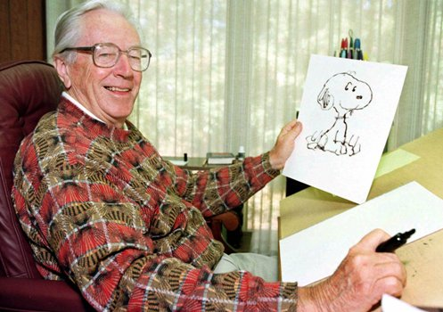

website de homenagem

Criador do Snoopy Charles M. Schulz
Em 2 de outubro de 1950, Charles M. Schulz apresentou uma nova tira de quadrinhos com um herói
improvável de cabeça redonda, “Bom e velho Charlie Brown”. Assim, PEANUTS nasceu. Logo, os leitores
começaram a conhecer e amar um elenco de personagens inesquecíveis: o filosófico Linus e sua irmã
rabugenta Lucy; o pianista Schroeder; a chamativa Sally; os amigos Franklin, Peppermint Patty, Marcie,
Pigpen e sua famosa nuvem de poeira. Mas ninguém roubou a cena como Snoopy, o beagle mais legal do
planeta. De seus humildes começos em apenas sete jornais dos EUA, PEANUTS cresceu para se tornar não
apenas a tira de quadrinhos mais amada da história, mas também um verdadeiro fenômeno global.
Hoje, PEANUTS é apresentado em syndicação online global e em milhares de jornais ao redor do mundo;
em especiais clássicos e nas novas séries de streaming “Snoopy in Space” e "The Snoopy Show" no Apple
TV+; além de aplicativos móveis, produções teatrais, filmes e livros (centenas deles). PEANUTS inspirou
atrações em parques temáticos, projetos de arte pública e todo tipo de produto consumidor, desde pijamas
até máquinas de pipoca. Em 2018, a Peanuts Worldwide fez parceria com a NASA em um Acordo de Ação
Espacial de vários anos, projetado para inspirar uma paixão pela exploração espacial e pelas áreas STEM
(ciência, tecnologia, engenharia e matemática) na próxima geração de estudantes. PEANUTS fala uma
língua universal — e também criou um vocabulário próprio: “Boa tristeza!”, “cobertor de segurança”,
“Seu cabeçudo!” e “A felicidade é...”. Para fãs ao redor do mundo, felicidade é PEANUTS.